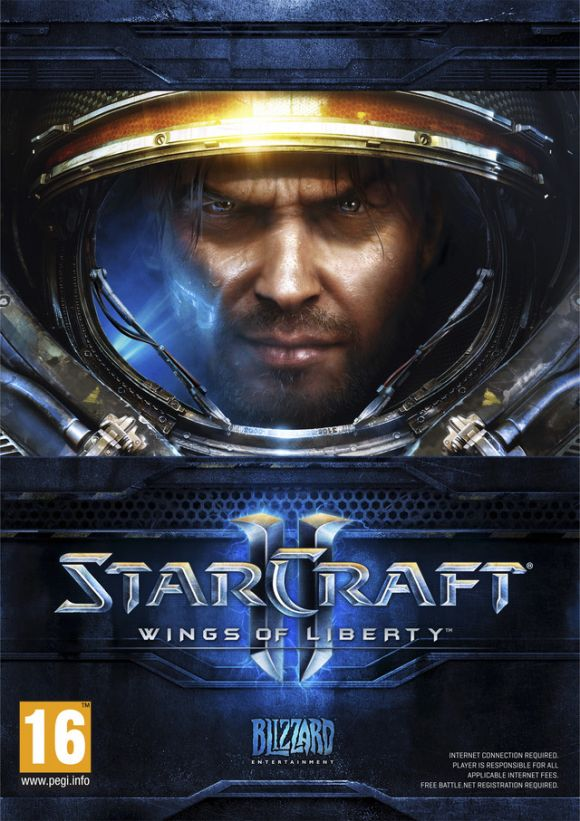
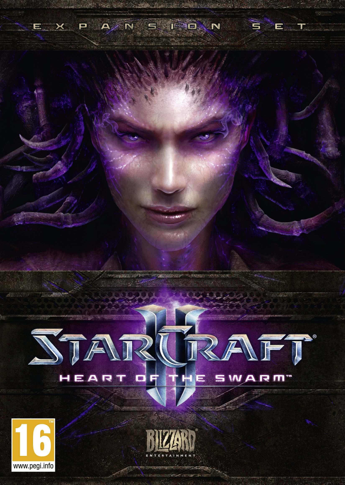
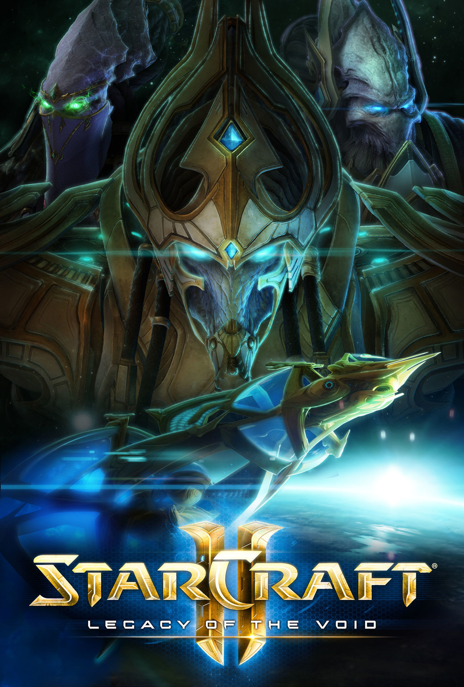

Multimedia
Ambientado en el siglo XXVI en el lejano Sector Koprulu, el juego gira en torno a tres especies: los Terran, humanos exiliados de la Tierra; los Zerg, una especie de formas de vida que asimilan otras organizada en enjambres; y los Protoss, una raza tecnológicamente avanzada con poderes psiónicos. Wings of Liberty se centra en los Terran, la expansión Heart of the Swarm en los Zerg y Legacy of the Void se centrará en los Protoss. El juego se desarrolla cuatro años después de los acontecimientos de StarCraft: Brood War, y sigue las hazañas de Jim Raynor y su grupo insurgente contra el autócrata del Dominio Terran liderado por el Emperador Arcturus Mengsk.

StarCraft II: Wings of Liberty
StarCraft II: Wings of Liberty (traducido como Alas de libertad) es un videojuego de estrategia en tiempo real desarrollado por Blizzard Entertainment para Microsoft Windows y Macintosh. Tras más de diez años, el legendario Starcraft regresa en una segunda parte dividida en tres juegos. Éste es el primero, Wings of Liberty, cuya campaña narra la historia de los Terran, los humanos lanzados a la conquista del espacio que inevitablemente se ven las caras en el camino con los Zerg y con los Protoss. Además de un completo modo campaña, Starcraft II incluye un modo multijugador lleno de posibilidades gracias a la conexión con Battle.net. Cuenta además con un potente editor de mapas con el que compartir contenido a través del sistema online de Blizzard.
StarCraft II: Heart of the Swarm
Esta expansión o secuela de StarCraft II se centra en la raza de los Zerg, del mismo modo que el juego original incluía una campaña protagonizada por los humanos. Heart of the Swarm continuará la historia justo donde los dejó Wings of Liberty, incluyendo aproximadamente 20 nuevas misiones de campaña. Esta a su vez tendrá nuevas mecánicas jugables, permitiendo evolucionar nuevas habilidades y unidades para la armada zerg. En la historia la protagonista será Kerrigan, que intentará restaurar sus fuerzas y recuperar el control de los zerg. Para el multijugador habrá nuevas unidades y mapas, para aumentar la profundidad jugable de cada raza. Así mismo, también se mejorarán las herramientas de búsqueda y de edición de mapas de Battle.net.
StarCraft II: Legacy of the Void
Legacy of the Void (traducido como Legado del vacío) es la tercera y última expansión de StarCraft II desarrollada por Blizzard Entertainment, su lanzamiento fue el 10 de noviembre de 2015. La expansión incluye unidades extras y cambios en el modo multijugador en comparación con Heart of the Swarm, así como una campaña de continuación que se centrará en la raza de los Protoss. La campaña se centra en Artanis como su principal personaje. Blizzard lanzó sus pruebas de beta del juego el 31 de marzo de 2015, las que se cerraron el 2 de noviembre de 2015, a una semana del lanzamiento del juego completo. La preventa del juego fue anunciada y habilitada para su adquisición en Battle.net el 15 de julio de 2015. Al reservar el juego, se accede inmediatamente a la beta de multijugador y a un set de 3 misiones prólogo tituladas Susurros del Olvido, las que también se habilitaron para todos los jugadores a partir de la actualización 3.0 de StarCraft II: Heart of the Swarm el 6 de octubre de 2015.
Trailer de la última expansión
Fragmento de la BSO incluida en el juego